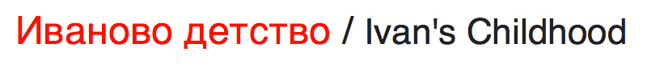
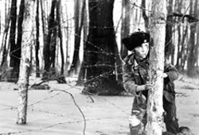
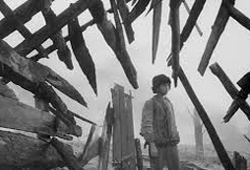
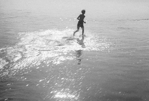
Ivan's Childhood, sometimes released as My Name Is Ivan in the US, is a 1962 war drama film and the first feature film directed by Andrei Tarkovsky. Co-written by Mikhail Papava, Andrei Konchalovsky and an uncredited Tarkovsky. The film features child actor Nikolai Burlyayev along with Valentin Zubkov, Evgeny Zharikov, Stepan Krylov, Nikolai Grinko, and Tarkovsky's wife Irma Raush.
It tells the story of orphaned boy Ivan, whose parents were killed by the invading German forces, and his experiences during World War II. Ivan's Childhood was one of several Soviet films of its period, such as The Cranes Are Flying and Ballad of a Soldier, that looked at the human cost of war and did not glorify the war experience as did films produced before the Khrushchev Thaw. In a 1962 interview, Tarkovsky stated that in making the film he wanted to "convey all [his] hatred of war", and that he chose childhood "because it is what contrasts most with war."
As Tarkovsky's first feature film, Ivan's Childhood won him critical acclaim and made him internationally known. It won the Golden Lion at the Venice Film Festival in 1962 and the Golden Gate Award at the San Francisco International Film Festival in 1962. The film was also selected as the Soviet entry for the Best Foreign Language Film at the 36th Academy Awards, but was not accepted as a nominee.
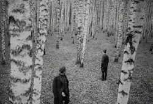
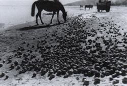
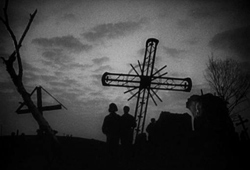
Shot two years after his diploma film The Steamroller and the Violin, Ivan's Childhood is based on the 1957 short story Ivan by Vladimir Bogomolov, which was translated into more than twenty languages. It drew the attention of the screenwriter Mikhail Papava, who changed the story line and made Ivan more of a hero. Papava called his screenplay Second Life, In this screenplay Ivan is not executed, but sent to the concentration camp Majdanek, from where he is freed by the advancing Soviet army. The final scene of this screenplay shows Ivan meeting one of the officers of the army unit in a train compartment. Bogomolov, unsatisfied with this ending, intervened and the screenplay was changed to reflect the source material. Mosfilm gave the screenplay to the young film director Eduard Abalov. Shooting was aborted and the film project was terminated in December 1960, since the first version of the film drew heavy criticism from the arts council, and the quality was deemed unsatisfactory and unusable.
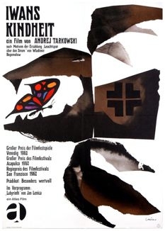
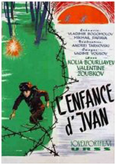
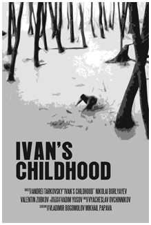
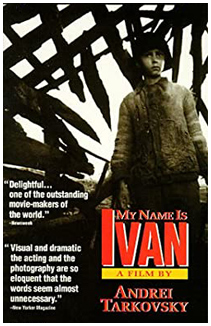
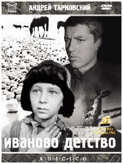
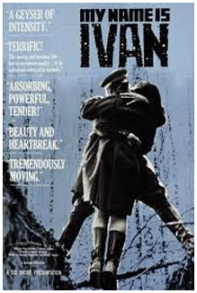
Ivan's Childhood was one of Tarkovsky's most commercially successful films, selling 16.7 million tickets in the Soviet Union. Tarkovsky himself was displeased with some aspects of the film; in his book Sculpting in Time, he writes at length about subtle changes to certain scenes that he regrets not implementing. However, the film received numerous awards and international acclaim on its release, winning the Golden Lion at the Venice Film Festival. It attracted the attention of many intellectuals, including Ingmar Bergman who said, "My discovery of Tarkovsky's first film was like a miracle. Suddenly, I found myself standing at the door of a room the keys of which had, until then, never been given to me. It was a room I had always wanted to enter and where he was moving freely and fully at ease."
Jean-Paul Sartre wrote an article on the film, defending it against a highly critical article in the Italian newspaper L'Unita written by Alberto Moravia and saying that it was one of the most beautiful films he had ever seen. In a later interview, Tarkovsky (who did not consider the film to be among his best work) admitted to agreeing with Moravia's criticisms at the time, finding Sartre's defence "too philosophical and speculative". Filmmakers Sergei Parajanov and Krzysztof Kieslowski later praised the film and cited it as an influence on their work.
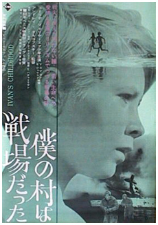
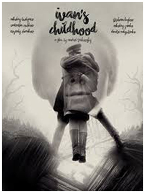
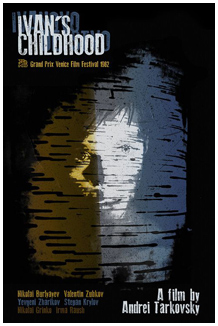